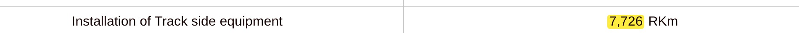
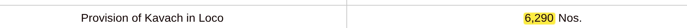

BAR LENGTH = ROUTE KM, TO SCALE
WORK STARTED
0
TRACK FITTED
0
WORKING
2,633
KAVACH 4.0 · 31 JUL 2026
+ 1,465 OLDER VERSION 3.2
PIB · 05 AUG 2026

PIB · 05 AUG 2026

PIB · 05 AUG 2026
KAVACH
0
ENGINES FITTED
FITTED ≠ WORKING